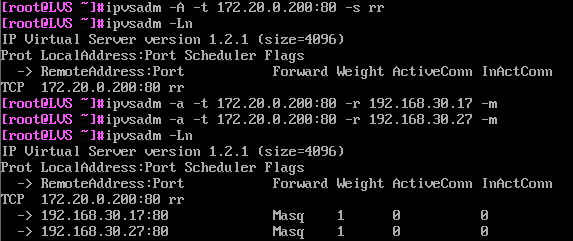

本节内容主要是是lvs相关性实验，及lvs健康性检查工具Ldirectord
一、实验：实现LVS-NAT
逻辑拓扑：
前期准备：
CLIENT: 172.20.0.123； 网关：172.20.0.200
LVS: VIP：192.168.30.200, DIP：172.20.0.200，启用ip_forward
RS1: 192.168.30.17
RS2: 192.168.30.27
LVS：
开启路由转发
echo net.ipv4.ip_forward=1 >> /etc/sysctl.conf
sysctl –p
sysctl –a |grep ip_f
RS1、2:
搭建WEB环境
网关指向192.168.30.200
yum install httpd
RS1:
echo RS1> /var/www/html/index.html
systemctl start httpd
RS2:
echo RS2> /var/www/html/index.html
systemctl start httpd
LVS:
添加LVS规则
yum install ipvsadm
Ipvsadm –A –t 172.20.0.200:80 –s rr
Ipvsadm –a –t 172.20.0.200:80 –r 192.168.30.17 –m
Ipvsadm –a –t 172.20.0.200:80 –r 192.168.30.27 –m
Ipvsadm –Ln

测试：
curl 172.20.0.200
二、实验：实现LVS与RS之间添加路由器的LVS-NAT
逻辑拓扑：
前期准备：
新增加一台虚拟机作为路由器，按下图进行网络环境搭建
CLIENT: 172.20.0.123；网关：172.20.0.200
LVS: 192.168.30.0,172.20.0.200，不启用ip_forward
ROUTER： VIP：172.20.0.100/16；DIP：192.168.30.200 /24，启用ip_forward
RS1: 192.168.30.17
RS2: 192.168.30.27
路由器必须配置到LVS的网关，并且开启路由转发功能
curl 172.20.0.200测试

实现端口映射：
以httpd服务为例，修改其中一台RS服务器的80端口为8080
RS1：
vim /etc/httpd/conf/httpd.conf
Listen 80 ==>Listen 8080
LVS：
清除原有LVS规则
ipvsadm -C
ipvsadm -A -t 172.20.0.200:80 -s rr
ipvsadm -a -t 172.20.0.200:80 -r 192.168.30.17:8080 -m
ipvsadm -a -t 172.20.0.200:80 -r 192.168.30.27:80 -m

CLIENT：

添加权重：
LVS：
修改调度算法为wrr模式
ipvsadm -a -t 172.20.0.200:80 -r 192.168.30.17:8080 -m -w 3

CLIENT：
我们看到LVS已按RS1:RS1 = 3:1的权重进行调度
三、实验：实现单网络LVS-DR
逻辑拓扑：
前期准备:
5台虚拟机，网络环境配置如下：
CLIENT: 桥接模式；172.20.0.222/16
ROUTER: 桥接模式；172.20.0.200/16；192.168.30.200/24
LVS: 仅主机模式;VIP:192.168.30.7/24；DIP：192.168.30.100/24
RS1: 仅主机模式;192.168.30.17/24；VIP:192.168.30.7/24
RS2: 仅主机模式;192.168.30.27/24；VIP:192.168.30.7/24
RS1,RS2:
echo 1> /proc/sys/net/ipv4/conf/lo/arp_ignore
echo 1> /proc/sys/net/ipv4/conf/all/arp_ignore
echo 2> /proc/sys/net/ipv4/conf/lo/arp_announce
echo 2> /proc/sys/net/ipv4/conf/all/arp_announce
一般习惯是将VIP绑定到RS服务器的回环网卡lo上
ip a a 192.168.30.7/32 dev lo
###
在RS1,RS2上搭建web服务
yum install httpd
RS1:
echo RS1> /var/www/html/index.html
systemctl start httpd
RS2:
echo RS2> /var/www/html/index.html
systemctl start httpd
LVS：
网络配置要求
VIP: ip addr a192.168.30.7/32 dev lo
DIP: 192.168.30.100/24 eth0
GATEWAY: 192.168.30.X #网关必须配，但可随意配置，同一网段即可
配置调度策略：
yum install ipvsadm
ipvsadm -A -t 192.168.30.7:80 -s rr
ipvsadm -a -t 192.168.30.7:80 -r 192.168.30.17 #默认dr模型
ipvsadm -a -t 192.168.30.7:80 -r 192.168.30.27
CLIENT:
测试
四、Ldirectord:实现LVS的RS健康性检查
ldirectord：监控和控制LVS守护进程，可管理LVS规则
包名：**ldirectord-3.9.6-0rc1.1.1.x86_64.rpm**
文件：
/etc/ha.d/ldirectord.cf 主配置文件
/usr/share/doc/ldirectord-3.9.6/ldirectord.cf 配置模版
/usr/lib/systemd/system/ldirectord.service 服务
/usr/sbin/ldirectord 主程序
/var/log/ldirectord.log 日志
/var/run/ldirectord.ldirectord.pid pid 文件
Ldirectord**配置文件示例**
checktimeout=3
checkinterval=1
autoreload=yes
logfile=”/var/log/ldirectord.log” #日志文件
quiescent=no #down时yes权重为0，no为删除
virtual=5 #指定VS的FWM或IP：port
real=172.16.0.7:80 gate 2
real=172.16.0.8:80 gate 1
fallback=127.0.0.1:80 gate #sorry server
service=http
scheduler=wrr
checktype=negotiate
checkport=80
request=”index.html”
receive=”test Ldirectord”
重启ldirectord服务，将自动生成LVS规则
systemctl start ldirectord
默认情况下，当有一台RS服务器宕机时，LVS还将继续调度，启动ldirectord服务后，当某台RS服
务器**宕机后，LVS将不再继续调度至该台服务器**